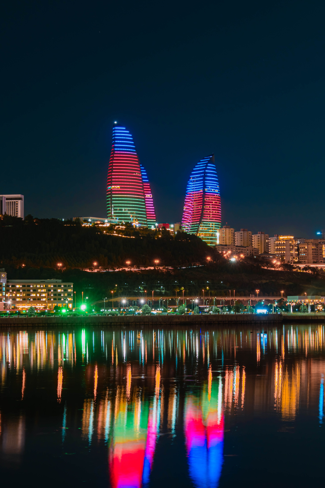

Fire that never goes out
Natural gas flames burn on the hillside of Yanar Dag, and an old fire temple stands nearby. The country’s name for itself is quite literal.

Azerbaijan sits where Europe meets Asia, on the western shore of the Caspian Sea and the southern slopes of the Greater Caucasus. For centuries, Silk Road caravans crossed it, and the country’s nickname, the Land of Fires, comes from natural gas flames that have burned on its hills since ancient times.
Today its capital, Baku, pairs a walled medieval Old City with glass-and-steel towers, while the countryside offers mountain villages, forests, mud volcanoes and some of the warmest hospitality you will find anywhere..
Distances are short: you can explore Baku in the morning, see 5,000-year-old rock art after lunch and watch a fire burning on a hillside at night.
Four reasons travellers fall for Azerbaijan.
Natural gas flames burn on the hillside of Yanar Dag, and an old fire temple stands nearby. The country’s name for itself is quite literal.
Stand inside a 12th-century walled city, then look up at the Flame Towers and the curved lines of modern Baku. Few capitals show both so closely.
Meals are long, tea is endless and guests are treated like family. Expect plov, dolma, fresh bread and sweet pakhlava.
The Caspian coast, the high Caucasus and green forest valleys can all fit into a single trip, with ski slopes and hiking trails in the north.
Three concept itineraries to spark ideas. Use the planner to estimate costs, or contact us to talk it through.
Old City and Maiden Tower, the Flame Towers at night, a day trip to Gobustan’s rock art and mud volcanoes, and an evening at Yanar Dag.
Head north-west into green hills, stay in a caravanserai, visit the Khan’s Palace and taste Sheki’s famous piti stew and halva.
Hike and breathe mountain air in the Greater Caucasus, visit village markets and end with a tea-house evening back in Baku.